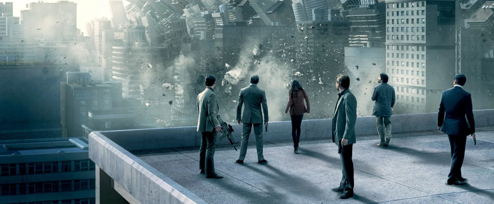

“Gerçek nedir?” Bu soru 2.400 yıldır felsefenin kapısını çalıyor. Platon mağara duvarındaki gölgelerden bahsetti; Descartes kötü bir cinin bizimle oyun oynadığını hayal etti; Kant ise fenomenlerin ardındaki “şeyin kendisi”nin asla bilinemeyeceğini söyledi. Sonra sinema geldi ve bu soruyu milyarlarca insanın aklına ekrandan bizzat zerketti.
Wachowski Kardeşler’in 1999’daki Matrix’i ve Christopher Nolan’ın 2010’daki Inception’ı; felsefi soruyu iki farklı yönden sordular. Matrix bize dışarıdan programlanmış bir hapishaneyi gösterdi: bilinç, başkasının çizdiği kod içinde yaşıyor. Inception ise tam tersini yaptı ve bize içeriden örülen bir labirenti sundu: bilinçaltı, kendi hapishane duvarlarını kendi eliyle örüyor. İki film birlikte, gerçeklik sorusunun simetrik ama birbirinden radikal biçimde farklı iki yüzünü oluşturuyor.
Hangisi daha ürkütücü? Bu soruya cevap aramak için önce her iki filmin felsefi mimarisini ayrı ayrı inşa etmemiz gerekiyor.
Inception fragmanı
Bölüm 1: Matrix ve “Dışsal” Simülasyon — Sistem, Yazılım, Kafes
Matrix’te gerçeklik, insanlığın kendi dışında var olan bir güç — Makineler — tarafından tasarlanmış ve sürdürülen bir simülasyondur. Kişinin deneyimlediği her şey; dokunma, tat, acı, arzu; biyoelektrik sinyallerin nöral arayüz üzerinden doğrudan beyne iletilmesiyle yaratılmıştır. Zihin, bedenin yaşadığı sandığı ama yaşamadığı bir dünyada hapsedilmiştir.
Bu kurgunun felsefi temeli Platon’un Mağara alegorisine (M.Ö. 380) dayanır: İnsanlar gerçeği değil, gerçeğin gölgesini görürler ve o gölgeleri gerçeğin ta kendisi zannederler. Ne var ki Platon’un mağarasında aldatmaca kasıtsızdır; gölgeler yanılgıyı üretir ama bilinçli bir planlama yoktur. Matrix’te ise Makineler kasıtlı tasarımcılardır: aldatmaca bir mühendislik ürünüdür. Bu fark, felsefi açıdan kritiktir çünkü ahlaki bir failin varlığını devreye sokar.
Descartes’ın Kötü Cini de burada devreye girer. Makinelerin rolü; 1641’de salt bir düşünce deneyi olarak hayal edilen o kötü niyetli, her şeye gücü yeten aldatıcının somutlaşmış hâlidir. Descartes şunu keşfetmişti: Bu senaryoda bile “düşünüyorum, o hâlde varım” ilkesi çökmez. Neo’nun da fark ettiği tam olarak budur: Sistemin içinden çıkarken tutunduğu tek ip kendi düşünen bilincinin varlığıdır.
Nick Bostrom’un 2003 tarihli Simülasyon Argümanı, Matrix’in kurguladığı ihtimali teorik çerçeveye taşır: Teknolojik olarak yeterince ilerlemiş bir medeniyet, bilinçli varlıkların simülasyonlarını çalıştırabilir; bu ihtimalin matematiksel olasılığı göz ardı edilemez. Matrix’teki Makineler, Bostrom’un tasarımcılarıdır.
Matrix’in en kritik felsefi çıkmazı şudur: Özgürleşmek bile sistemin bir parçasıdır. Matrix Reloaded’da Mimar, Neo’ya şok eden gerçeği açıklar: “Seçim illüzyonu, Matris’in temel denkleminin ayrılmaz parçasıdır.” Neo’nun isyanı da, onu izleyenlerin umudu da; makinelerin hesapladığı değişkenlerin içindedir. Bu, özgür iradenin deterministik çöküşüdür: Sonsuz hesaplanabilir bir evrende, özgürlük yalnızca kaçınılmazın farkında olmayan bilinçtir.
Matrix’in Gerçeklik Sorusu: Dışarıda Bir El Var
Matrix’in ontolojik çerçevesi dışsal bir gerçeklik varsayımına dayanır: Zion vardır, gerçek bir dünyadır, ulaşılabilirdir. Bu, Baudrillard’ın itiraz ettiği noktadır; çünkü ona göre simülakrın ötesinde ulaşılacak gerçek bir dünya fikri, modern dünyanın naifliğidir. Ama sinema anlatısı açısından bu varsayım zorunludur: Kahraman bir şeye kavuşmak için savaşmalıdır. Matrix’te savaşılan şey dışarıda, bilincin ötesindedir.
Bölüm 2: Inception ve “İçsel” Simülasyon — Bilinçaltı, Rüya, Yapı
Christopher Nolan’ın 2010’da yarattığı Inception; gerçeklik sorusunu tamamen farklı bir ekseninden açar: Kaynağı dışarıda değil, içeridedir. Tehlike, bir makinenin yazdığı koddan değil; kendi bilinçaltının ürettiği mimariden gelir. Cobb ve ekibi rüya içinde rüyaya dalarak bir kişinin zihnine fikir yerleştirmeye çalışırken; aslında bilinçaltının nasıl kendi gerçekliğini inşa ettiğini, sonra bu inşaatın içinde nasıl hapsolunabileceğini gözler önüne serer.
Sigmund Freud 1900’de Die Traumdeutung’de (Düşlerin Yorumu) rüyaları bastırılmış arzuların şifreli dili olarak tanımladı. Rüyada ego’nun savunma mekanizmaları gevşer; bilinçdışı materyal semboller ve imgeler aracılığıyla yüzeye çıkar. Inception’daki rüya katmanları tam bu yapıyı sinematik olarak modeller: her kat, daha derindeki bilinçdışına karşılık gelir; en alt katta Cobb’un en bastırılmış acısı, ölen karısı Mal, onu sabote eder. Rüya bir özgürlük alanı değil; geçmişin esareti altındaki bir labirenttir.
Jung’un Gölge arketipi burada sahneye girer. Mal, Cobb’un gölgesidir: suçluluk duygusu, kayıp ve inkâr ettiği gerçek biçim alan, somutlaşan bir psişik güç. Inception’ın en derin felsefi katmanı, gerçeklik sorusunu zihinsel olarak değil, duygusal olarak sorar: Gerçek, olgusal doğruluğu olan şey midir; yoksa bize en fazla anlam yükleyen, en derinden hissettiren şey midir?
Totem: Öznel Gerçekliğin Sembolü
Filmde her karakterin bir totemi vardır: kendi gerçekliğini sınamak için taşıdığı kişisel nesne. Cobb’un totemi dönen topaçtır: Rüyada sonsuz döner, gerçekte er ya da geç yere düşer. Ancak film boyunca bu sınamanın güvenilirliği sürekli aşınır; çünkü totem bile insan zihninin ürünüdür. Felsefede bu, fenomenolojik döngü olarak bilinir: Gerçekliği doğrulamak için kullandığın araç, aynı gerçekliğin parçasıdır; dışarıdan bir bakış açısı mevcut değildir.
Edmund Husserl’in fenomenolojisi ve Maurice Merleau-Ponty’nin beden felsefesi şunu söyler: Bilincin dışına çıkmak mümkün değildir çünkü deneyimleyen özne ile deneyimlenen dünya birbirini karşılıklı olarak kurar. Inception’ın son sahnesi — topaç dönmeye devam ederken kamera kesilir — bu felsefi soruya verilebilecek en dürüst sinematik yanıttır: Bilmiyoruz. Ve bilemeyiz.
Rüya Katmanları: Zaman ve Gerçeklik Göreliği
Inception’ın en özgün katkısı gerçeklik tartışmasına zamanı eklemesidir. Rüyanın her katında zaman akışı farklıdır: birinci katta geçen beş dakika, ikinci katta bir saat, üçüncü katta birkaç gün, limbo katında ise onlarca yıla karşılık gelir. Bu, Albert Einstein’ın özel görelilik teorisiyle şiirsel bir örtüşmedir: Zaman, gözlemcinin konumuna ve referans çerçevesine göre değişir. Nolan bilinçli olarak bu paralelliği kurdu; film, bilim kurgunun görelilik teorisine yaptığı en zarif selamdır.
Peki gerçekliği tanımlayan şey zaman tutarlılığı mıdır? Eğer öyleyse — rüyada saatler geçtiğini hissediyorsak — o deneyim en az “gerçek” dünyamız kadar gerçektir. Inception bu soruyu yanıtlamak yerine derinleştirir; ve bu tercih, filmi felsefi açıdan dürüst kılar.
“Bilinçaltı kendi mantığıyla işler. Orada her şey mümkündür — ama hiçbir şey güvenilir değildir.” — Christopher Nolan, Inception yapım notları, 2010
Ortak Eksen: İkisi de Nerede Buluşuyor?
Her iki film de Kartezyen şüpheyi ana eksen olarak paylaşır: Gözlemleyebildiğin şeyin gerçekten var olup olmadığını kanıtlayamazsın. İkisi de bilinç ile gerçeklik arasındaki kopuşu görsel dille anlatır. Ve ikisi de izleyiciyi pasif bir konuma değil, aktif bir sorgulama sürecine çeker. Filmi izledikten sonra anahtarını düşürdüğünde ya da bir an için nerede olduğunu unuttuğunda; beyinde kısa bir devre çakar.
Her iki film de felsefi açıdan Kantçı bir sınırı kabul eder: Gerçeklik salt algıdan bağımsız olarak bilinemez. Kant’ın “numen” (şeyin kendisi) ile “fenomen” (deneyimlenen şey) ayrımı; hem Matrix’in Zion’ı hem de Inception’ın topaç sahnesiyle örtüşür. İkisi de bize fenomenin ötesine geçemeyeceğimizi farklı yollarla hatırlatır.
Sonuç: Hangisi Daha Ürkütücü? Hangisi Daha Gerçek?
Matrix daha anlaşılır bir korku sunar: Dışarıda gerçek bir düşman var, sistemin içindesin, kurtulmak için nesnel bir hedef mevcut. Korku büyük ama umudu da büyük. Zion vardır. Özgürlük somuttur. Belki de bu nedenle Matrix bir devrim hikâyesi olarak okunabilir; felsefenin toplumsal eylemi tetikleme kapasitesini gösterir.
Inception ise çok daha derin, çok daha köksüz bir korku taşır: Düşman içeridedir. Hapishanenin duvarlarını kendin örüyorsun. Bilinçaltın seni sabote ediyor; üstelik bunun farkındasın ama bunu durduramıyorsun. Matrix’te Neo ajan Smith’i durdurabilir; Inception’da Cobb, Mal’ı hiçbir zaman tam olarak susturamaz. Çünkü Mal, onun içindedir.
Felsefi açıdan hangisi daha gerçek bir tehdit? Eğer gerçekliği dışarıdan tanımlarsan — nesnel fiziksel dünya, doğrulanabilir olgular, uzlaşımsal gerçeklik — Matrix daha acil sorular sorar. Ama eğer gerçekliği içeriden tanımlarsan — anlam, duygu, kimlik, bellek — Inception çok daha derinden sarsıcıdır. Çünkü bilinçaltının ördüğü hapisten kaçmak için dışarıda bir Morpheus yoktur. Totem senin elindir. Kurtarıcı senin iradendir. Ve irade; bazen en az güvenilir şeydir.
Bu iki soruyu aynı anda tutmak zorundayız: Gerçekliği bize dayatan bir dış güç var mı? ve Gerçekliği bize dayatan kendi zihnimiz mi? Felsefe bu ikiliği çözmez; çözemez. Ama Matrix ve Inception birlikte bu soruyu en çarpıcı biçimiyle önümüze koyar. Ve sinema salonundan çıktığında — gece yarısı, ıslak bir kaldırımda, cebindeki telefona bakarken — bir saniye için şunu düşünürsün: Bu gerçek mi?
O bir saniyelik şüphe, Platon’un mağarasından beri felsefenin peşinde olduğu şeydir.
Konuyla bağlantılı yazılarımız: Gerçekliğin Yazılımı: Matrix ve Platon’un Mağarası, Mitoloji ve Modern Psikoloji, Antik Felsefe.